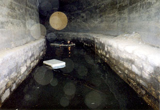
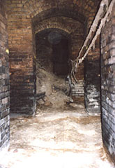
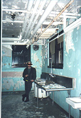
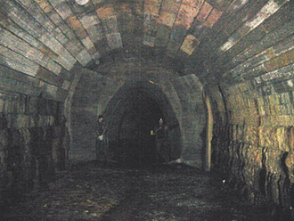
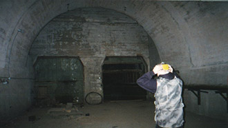

The Action Squad is a group of people in the Twin Cities that explore abandoned buildings and tunnels in the area. They post pictures and journals of their adventures on their website at
actionsquad.org.





West Bank Tailrace Tunnels.
Hamm's Brewery (left) & Cambridge Mental Institution (right).
Phalen Creek Tunnel.
Ford Motors Abandoned Mining Tunnels.